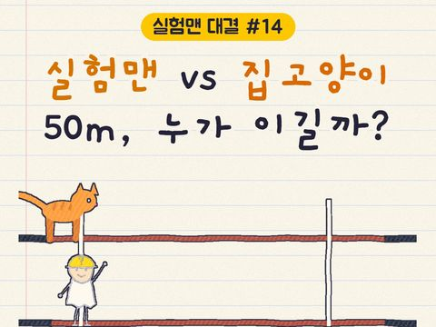
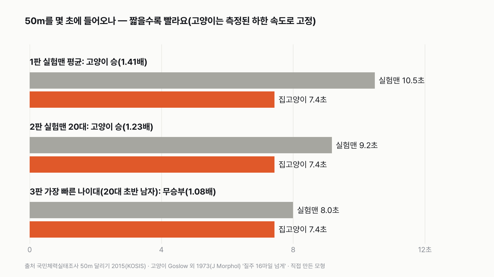
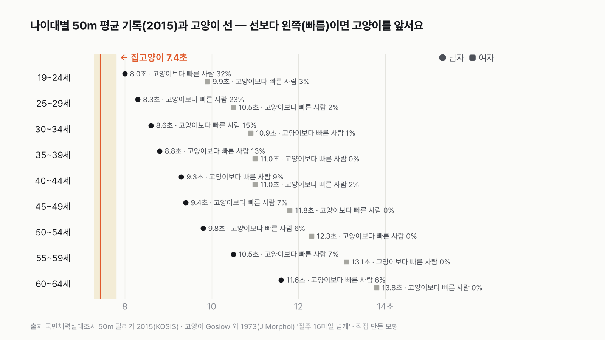
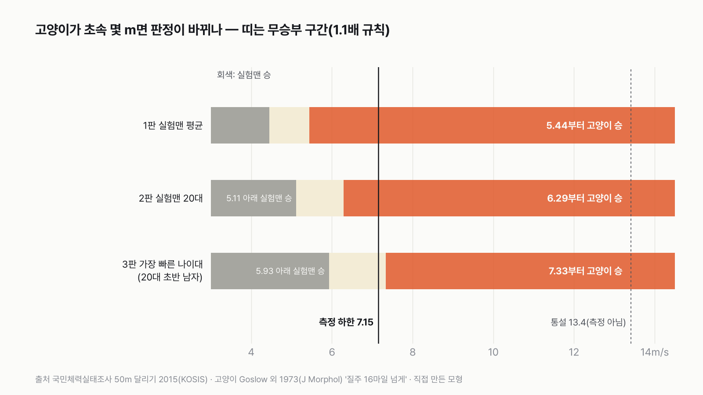

실험맨 vs 집고양이, 50m 달리기를 하면 누가 이길까
다리 길이와 덩치는 실험맨이, 순간 속도는 고양이가 앞서요. 50m면 어느 쪽이 유리할지 먼저 골라 주세요.

독자 투표
실험맨(평균 한국인)이 집고양이와 50m 달리기를 하면 누가 이길까?
이 대결의 규칙 자세히 (자료·판정 기준)
3줄 요약
- 평균 한국인 '실험맨'과 집고양이가 같은 출발선에 섰어요. 50m 앞 결승선까지 누가 먼저 들어올까요?
- 사람 쪽은 국민체력실태조사에서 잰 50m 기록, 고양이 쪽은 고양이가 달리는 모습을 촬영해 잰 논문을 썼어요.
- 실험맨 평균, 20대, 가장 빠른 나이대 세 판으로 겨뤘어요. 투표하면 결과가 바로 아래에 열려요.
조건과 규칙
- 실험맨은 평균 한국인이에요. 국민체력실태조사에서 성인 남녀가 50m를 서서 출발해 달린 기록을 나이대별로 써요.
- 집고양이는 성체 집고양이예요. 고양이가 마음껏 달리는 모습을 촬영해 속도를 잰 논문의 값을 써요.
- 둘 다 정지 상태에서 같은 신호에 출발하고, 먼저 50m를 지난 쪽이 이겨요.
- 실험맨 평균, 실험맨 20대, 가장 빠른 나이대 세 판으로 겨뤄요.
결과 요약
3판 고양이 2승 1무 → 최종 집고양이 승
- 실험맨 평균은 50m에 10.5초, 집고양이는 7.4초예요. 고양이가 1.4배 빨라요.
- 가장 빠른 나이대인 20대 초반 남자(평균 8.0초)만 고양이와 비겨요. 그 나이대에서도 고양이보다 빠른 사람은 열 명 중 셋이에요.
- 이 고양이는 논문이 잰 '이보다 빠르다'는 하한 속도예요. 고양이가 그보다 겨우 2.5% 더 빠르면 20대 초반 남자도 져요.
그래서? 실험맨이 고양이를 이기려면 50m를 6.76초 안에 달려야 해요. 비기는 데도 8.18초 안이 필요해요.
독자 예상 vs 데이터 결과
실험맨(평균 한국인)이 집고양이와 50m 달리기를 하면 누가 이길까?
데이터로 보면 집고양이. 실험맨 평균 10.5초, 집고양이 7.4초예요. 가장 빠른 20대 초반 남자만 고양이와 비겨요.
3줄 요약
- 평균 한국인 '실험맨'과 집고양이가 같은 출발선에 섰어요. 50m 앞 결승선까지 누가 먼저 들어올까요?
- 사람 쪽은 국민체력실태조사에서 잰 50m 기록, 고양이 쪽은 고양이가 달리는 모습을 촬영해 잰 논문을 썼어요.
- 실험맨 평균, 20대, 가장 빠른 나이대 세 판으로 겨뤘어요.


숫자 두 개로 줄이면 이래요. 고양이는 50m를 평균 초속 6.7m로 달리고, 실험맨은 초속 4.8m로 달려요. 고양이보다 빠른 실험맨은 20대 초반 남자 가운데 많아야 열 명 중 셋, 같은 나이 여자는 백 명 중 셋이에요.
| 판 | 실험맨 | 집고양이 | 배수 | 승자 |
|---|---|---|---|---|
| 1판 실험맨 평균(19~64세 남녀) | 10.5초 | 7.4초 | 1.41배 | 고양이 |
| 2판 실험맨 20대(19~29세 남녀) | 9.2초 | 7.4초 | 1.23배 | 고양이 |
| 3판 가장 빠른 나이대(19~24세 남자) | 8.0초 | 7.4초 | 1.08배 | 무승부 |
| 최종 | 3판 고양이 2승 1무 → 집고양이 승 |
판마다 느린 쪽 시간을 빠른 쪽으로 나눠서 1.1배가 안 되면 무승부로 쳤어요. 이 규칙과 가정이면 최종 승자는 집고양이예요. 실험맨이 지지 않은 건 가장 빠른 나이대 하나뿐이고, 그것도 비긴 거예요.
1판 실험맨 평균: 고양이 승(1.41배)
국민체력실태조사는 성인 남녀를 나이대별로 모아 50m 달리기를 재요. 마지막으로 잰 2015년 기록에서 19~64세 남녀 18개 묶음(남녀 × 9개 나이대)의 평균을 내면 10.5초예요. 65세 이상은 이 조사에서 50m를 재지 않아 빠졌어요. 느린 나이대가 빠져서 실험맨에게 유리해요. 고양이는 출발해서 최고 속도에 닿을 때까지 조금 걸리는 시간까지 넣어 7.4초예요. 3초 넘게 차이가 나요. 고양이가 결승선을 지날 때 실험맨은 아직 대략 15m 뒤에 있어요.
2판 실험맨 20대: 고양이 승(1.23배)
몸이 가장 날랜 20대로 좁혀도 남녀 평균은 9.2초예요. 고양이와 1.8초 차이예요. 20대 여자 평균은 19~24세가 9.9초, 25~29세가 10.5초로 고양이보다 2초 넘게 느려요. 저는 이 판에서 20대가 비길 줄 알았는데, 남녀를 함께 세니 고양이가 여유 있게 이겼어요.
3판 가장 빠른 나이대: 무승부(1.08배)
가장 빠른 나이대는 19~24세 남자예요. 평균 8.0초, 고양이와 0.6초 차이라 1.1배 규칙 안에 들어와 무승부예요. 같은 나이대 안에서도 사람마다 차이가 커요. 기록이 고르게 퍼져 있다고 보면, 이 나이대 남자 가운데 고양이보다 빨리 들어오는 사람은 많아야 32%예요. 25~29세 남자는 23%, 30대 초반 남자는 15%예요. 여자는 어느 나이대든 3%를 넘지 않아요.


고양이 숫자는 하한이에요
고양이 쪽 숫자는 1973년 논문 하나에서 왔어요. 실험실에서 기르던 성체 고양이 11마리가 걷고, 뛰고, 질주하는 모습을 촬영해 분석한 연구인데, 빠른 질주를 "시속 16마일을 넘는다"고 적었어요. 초속 7.15m예요. '넘는다'라서 이 값은 측정된 빠른 질주의 아래쪽 끝이에요. 실제 최고 속도는 이보다 빠를 수 있어요. 그래서 고양이를 이 하한으로 고정한 건 실험맨에게 유리한 선택이에요. 다만 이 11마리는 '빠른 질주'를 할 때 잰 실험실 고양이라, 소파에서 지내는 평균 집고양이 모두가 이 속도를 낸다는 뜻은 아니에요.
흔히 "집고양이는 시속 48km로 달린다"고 해요. 저는 이 숫자를 끝까지 따라가 봤는데, 실제로 잰 논문이 없어서 놀랐어요. 포유류 최고 속도를 모은 1983년 논문의 표에도 집고양이는 없었어요. 이 숫자가 맞다면 고양이는 50m를 4.6초에 들어와, 가장 빠른 나이대도 1.8배 차이로 져요. 측정 근거가 없어서 판정에는 쓰지 않았어요.


고양이가 초속 몇 m면 판정이 바뀔까
3판은 고양이 속도에 아주 예민해요. 고양이가 초속 7.33m를 넘으면 20대 초반 남자도 져요. 논문이 잰 하한보다 겨우 2.5% 빠른 속도예요. 반대로 20대 초반 남자가 이기려면 고양이가 초속 5.93m보다 느려야 해요. 1판의 실험맨 평균은 고양이가 초속 5.44m만 넘어도 져요.
양쪽을 같은 잣대로 보면
사람 기록에는 출발 신호를 듣고 몸이 움직이기까지 걸리는 시간이 들어 있어요. 고양이 모형에는 그 시간이 없어요. 고양이에게도 0.2초를 더하면 고양이는 7.6초예요. 고양이가 50m 내내 최고 속도를 못 버텨 평균 10% 느려지면 8.2초예요. 둘을 함께 넣어도 1판은 고양이 승, 2판과 3판은 무승부예요. 2판은 1.096배로 무승부 선에 딱 걸쳐 있어요. 최종 판정은 고양이 1승 2무로 여전히 고양이 쪽이에요. 계산한 네 경우 모두 실험맨이 이기는 판은 없었어요.
덤: 사람 기록은 더 느려졌어요
모든 조사 해에 들어 있는 19~54세 나이대만 같은 잣대로 놓고 보면, 남자 평균은 1998년 8.0초에서 2015년 8.9초로, 여자는 10.7초에서 11.1초로 느려졌어요. 같은 나이대끼리 비교한 숫자예요.
이 규칙과 가정이면 집고양이가 2승 1무로 이겨요. 실험맨이 버틸 수 있는 건 가장 빠른 20대 초반 남자뿐인데, 고양이가 논문이 잰 하한보다 2.5%만 빨라도 그 나이대마저 고양이 차지예요.
이 숫자는 어디서 왔나요
출처
기준일 사람 기록은 2015년 측정값(2026년 11월 9일 KOSIS에서 받음)이에요. 조건은 2026년 11월 9일, 계산하기 전에 정했어요.
문화체육관광부·국민체육진흥공단국민체력실태조사
- 50m달리기 변화: 성인 남자·여자KOSIS DT_113_STBL_1020292
나이대별 50m 평균·표준편차, 1989~2015
Goslow·Reinking·Stuart 1973,Journal of Morphology
- 고양이 걸음 주기doi:10.1002/jmor.1051410102원본 보기
성체 고양이 11마리, 빠른 질주 시속 16마일 넘게
Smith·Chung·Zernicke 1993,Experimental Brain Research
- 고양이 러닝머신 질주doi:10.1007/BF00230301원본 보기
러닝머신 질주 초속 4.0m(최고 속도 측정 아님)
Garland 1983,Journal of Zoology
- 포유류 최고 달리기 속도 (J Zool 199:157)원본 보기
집고양이 행이 없음을 확인
어떻게 셌나요
- 실험맨 기록: 국민체력실태조사(문화체육관광부·국민체육진흥공단)의 50m 달리기, 성인 남녀 19~64세 9개 나이대의 2015년 평균과 표준편차예요. 50m 달리기는 2015년을 끝으로 측정 항목에서 빠져, 2015년이 가장 최근 값이에요.
- 판마다 실험맨: 1판은 18개 묶음(남녀 × 9개 나이대) 평균의 평균, 2판은 19~24세·25~29세 남녀 4개 묶음 평균의 평균, 3판은 19~24세 남자 평균이에요. 인구 수로 가중하지 않았어요.
- 고양이 속도(측정): Goslow·Reinking·Stuart 1973 논문이 성체 고양이 11마리를 촬영해 적은 "빠른 질주 시속 16마일 넘게", 초속 7.15m예요.
- 고양이 50m 시간(가정): 정지 상태에서 일정하게 빨라져 초속 7.15m에 닿은 뒤 그대로 달린다고 봤어요. 빨라지는 정도(가속도)는 잰 값이 없어서 1초에 초속 4~12m씩 붙는 범위에서 고르게 2만 번 뽑았어요. 그 가운데 값이 7.44초, 90%가 7.30~7.80초 사이예요.
- 고양이보다 빠른 사람의 비율: 나이대마다 평균과 표준편차로 기록이 종 모양으로 퍼져 있다고 보고, 7.44초보다 빨리 들어오는 사람의 비율을 셌어요.
- 판정: 느린 쪽 ÷ 빠른 쪽이 1.1배 미만이면 무승부예요.
| 항목 | 값 | 잰 것 / 가정 |
|---|---|---|
| 사람 50m 기록(나이대별) | 8.0~13.8초 | 잰 것(2015) |
| 고양이 빠른 질주 속도 | 초속 7.15m 넘게 | 잰 것(1973, 하한) |
| 고양이 가속도 | 1초에 초속 4~12m | 가정 |
| 고양이가 50m를 끝까지 같은 속도로 | 그렇다고 봄 | 가정(10% 느린 경우도 계산) |
| 고양이 출발 반응 시간 | 0초 | 가정(0.2초 경우도 계산) |
| 사람 기록의 퍼짐(종 모양) | 평균·표준편차 | 가정 |
한계 6가지
이 데이터로 말할 수 없는 것
- 고양이 측정은 1973년 논문 하나, 고양이 11마리예요. 사람 기록은 2015년이에요. 40년 넘게 떨어진 두 자료를 맞댔어요.
- 고양이 속도는 '넘는다'로 적힌 하한이에요. 실제 최고 속도는 이보다 빠를 수 있어요. 고양이가 얼마나 빨리 빨라지는지, 50m를 끝까지 전력으로 달리는지는 잰 자료를 찾지 못해 가정으로 뒀어요.
- 고양이는 사람처럼 출발 신호에 맞춰 달리지 않아요. 이 대결은 둘 다 같은 순간에 출발한다고 친 계산이에요.
- 사람 판은 나이대 평균의 평균이라, 나이대별 인구 수를 반영하지 않았어요. 65세 이상은 50m를 재지 않아 빠졌는데, 이건 실험맨에게 유리한 쪽이에요.
- 고양이 11마리는 실험실 고양이가 '빠른 질주'를 할 때 잰 값이에요. 평균 집고양이의 평소 속도와는 달라요.
- 기록이 종 모양으로 퍼져 있다는 건 가정이에요. 실제 분포는 더 비뚤 수 있어요.
다음 대결
대결 다 보기사 온 커피값, 밥값의 5% 넘을까
실험맨, 사 온 커피값이 밖에서 먹는 밥값의 5%를 넘을까?
A넘는다vsB못 넘는다
투표하러 가기

판다 vs 실험맨
판다 vs 실험맨, 다섯 판 승부로 하루에 '더 많이 먹는' 쪽은?
A판다vsB실험맨
투표하러 가기

1년 밥값 vs 최신 스마트폰
실험맨이 1년 동안 사 먹는 밥값(배달 포함)으로 최신 스마트폰을 살 수 있을까?
A산다vsB못 산다
투표하러 가기

20대 vs 우리 할아버지
20대 여성 실험맨 vs 65세 이상 남성 실험맨, 네 판 승부로 하루 운동을 더 많이 하는 쪽은?
A20대 여성vsB65세 이상 남성
투표하러 가기

출퇴근 vs 연차
실험맨이 1년 동안 출퇴근에 쓰는 시간과 연차 휴가로 쉬는 시간, 세 판 승부로 더 긴 쪽은?
A출퇴근vsB연차 휴가
투표하러 가기

1년 쓰는 물 vs 레인 한 줄
실험맨 혼자 1년 쓴 수돗물로 25m 수영장 레인 한 줄을 채울 수 있을까?
A채운다vsB못 채운다
투표하러 가기

실험맨 vs 고양이 그루밍
실험맨 vs 고양이, 세 판 승부로 하루 씻고 꾸미는 시간이 더 긴 쪽은 누굴까?
A실험맨vsB고양이
투표하러 가기

고3 vs 기린
고3 실험맨과 기린, 하루에 누가 더 적게 잘까?
A고3vsB기린
투표하러 가기
새 글 나오면 받아 보기
피드 리더 앱에 이 사이트 주소를 한 번 넣어 두면, 새 글이 올라올 때 앱에 떠요. 가입이나 메일 주소는 필요 없어요.
받는 법 보기
- 피드 리더 앱을 하나 골라요. 새 글을 모아 보여 주는 앱이에요. 예를 들면 Feedly나 Inoreader가 있어요. 둘 다 무료고 웹·휴대폰에서 써요.
- 앱에서 '구독 추가'(+)를 누르고 아래 주소를 붙여 넣어요.
- 끝이에요. 새 글이 올라오면 앱 목록에 떠요.
https://protofu.github.io/opendata-insight/feed.xmlFeedly를 쓴다면 여기를 눌러 바로 추가할 수도 있어요.